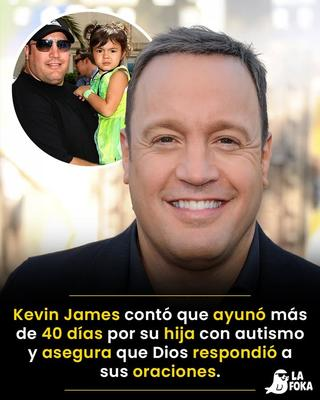

Kevin George Knipfing (n. en 1965), conocido por su nombre artístico de Kevin James, es un actor y comediante estadounidense nominado al Premio Emmy. En al menos dos ocasiones se han viralizado sus declaraciones manifestando cómo, cuando su hija Sienna-Marie James (n. en 2005) era niña, padecía de un insomnio crónico severo y tics involuntarios, directamente relacionados con su Trastorno del Espectro Autista (TEA). Y cuando un padre ve sufrir a su hija, la desesperación puede llevarlo a intentar prácticamente cualquier cosa. Los neurólogos infantiles conocen bien ese fenómeno: familias que recorren numerosos consultorios, prueban tratamientos experimentales, modifican radicalmente la alimentación de sus hijos, y terminan depositando todas sus esperanzas en su fe religiosa. Lo hacen porque aman profundamente a sus hijos.


Por eso resulta fácil comprender desde el punto de vista humano el testimonio de James, quien, desde su devoción católica, ha relatado cómo según él, logró controlar esos síntomas que hacían sufrir a su niña. Comenta que tras completar un ayuno de 41 días y medio acompañado de oración, tomando día a día sólo agua con un poco de sal, comenzó a observar una importante mejoría en la salud de Sienna-Marie, lo cual atribuyó directamente a la intervención divina. Y por supuesto, medios y creadores de contenido cristianos se aprovecharon de la oportunidad, presentando la historia con titulares llamativos como una prueba de que «Dios respondió» a la fe y oraciones de James. Sin embargo, desde la neurología, la psicología y el pensamiento crítico, la conclusión merece un análisis mucho más serio.
El cerebro humano evolucionó para buscar relaciones de causa y efecto, de tal forma que, si ocurre un acontecimiento y poco después sucede otro, tendemos a asumir automáticamente que el primero causó el segundo. Se trata de un mecanismo que fue muy útil para nuestros antepasados, pero que también puede inducir a errores cuando se aplica a situaciones complejas. Es ahí donde se origina una conocida falacia lógica: post hoc ergo propter hoc («después de esto, por lo tanto, a causa de esto»). Y precisamente este sesgo cognitivo aparece en el relato de Kevin James.
Sin embargo, hay un detalle que suele omitirse cuando la historia se viraliza: mientras James ayunaba, su hija no permanecía simplemente en espera de un milagro. Estaba siendo atendida por diversos especialistas, recibía tratamientos médicos, había consultado a múltiples profesionales y, además, la familia incorporó un tratamiento adicional mediante el llamado Método Melillo. En otras palabras, durante ese mismo período coincidieron numerosas intervenciones.
Surge entonces una pregunta inevitable: ¿cómo puede saberse que la mejoría fue consecuencia del ayuno y no de alguno de los tratamientos, de la evolución natural del cuadro, o de la combinación de todos esos factores? Y precisamente para responder preguntas como ésta, existen los estudios clínicos controlados.
Pero conviene también aclarar otro punto importante: con frecuencia algunos medios han insinuado que —gracias al ayuno y oración de James— Sienna-Marie «dejó de ser autista». Sin embargo, el autismo no es una condición que desaparezca. El Trastorno del Espectro Autista es una condición del neurodesarrollo presente durante toda la vida. Lo que sí puede cambiar, y muchas veces cambia de manera notable, son los síntomas asociados. El sueño puede mejorar, los tics disminuir, la ansiedad reducirse y las habilidades sociales fortalecerse gracias a terapias, apoyos educativos, intervenciones médicas, maduración del sistema nervioso, y un entorno familiar adecuado. Pero nada de eso implica que el autismo haya desaparecido.
Desde la neurología infantil se sabe, además, que tanto los trastornos del sueño como los tics suelen fluctuar considerablemente. Hay períodos de empeoramiento y otros de mejoría espontánea. Y ese comportamiento variable dificulta atribuir los cambios a un único factor aislado.
Y a esto se suma otro fenómeno completamente humano: el pensamiento mágico. Después de años de sufrimiento, cualquier mejoría significativa queda grabada en la memoria, y el cerebro busca desesperadamente una explicación. Las religiones entonces, siempre prestas a dar respuestas fáciles, ofrecen la solución: «Fue Dios quien actuó». Y obviamente se trata de una interpretación emocionalmente reconfortante, pero eso no la convierte automáticamente en verdadera. Si realmente bastara con que un padre ayunara cuarenta días para mejorar el autismo, el insomnio o los tics de sus hijos, la neurología pediátrica ya no tendría sentido. Los hospitales infantiles estarían vacíos y los ensayos clínicos serían innecesarios. Sin embargo, jamás se ha demostrado científicamente que el ayuno de un padre pueda producir tales efectos.
Ahora bien, más allá del aspecto médico, el relato plantea también preguntas teológicas difíciles de ignorar: Kevin James interpreta sin ninguna duda que «Dios» respondió finalmente a sus oraciones; pero entonces, ¿quién permitió que su hija naciera con esa condición? Y si «Dios» tenía el poder de aliviar desde el principio el sufrimiento de la niña, ¿por qué tuvo que esperar a que Kevin James perdiera cerca de 60 libras de peso (27 kilos) y se sintiera físicamente agotado para finalmente intervenir? ¿Por qué permitir que una niña y su familia atravesaran consultas, hospitales y tratamientos antes de intervenir? —La respuesta habitual es que «los tiempos de Dios son perfectos». Sin embargo, esa explicación conduce a otra pregunta incómoda: ¿por qué esos tiempos incluyen el sufrimiento prolongado de una niña?
Pero existe otra dificultad: la explicación de James sobre la respuesta de «Dios» al ver el sufrimiento de padre e hija sin intervenir, teniendo todo el poder para hacerlo, describe, sin proponérselo, la imagen de un «Dios» insensible, sin empatía, que decide esperar a que un padre pase hambre durante muchos días, se debilite y llegue al límite de sus fuerzas, antes de conceder ayuda. Desde una perspectiva ética, es una imagen que resulta difícil de conciliar con la idea de un padre amoroso e infinitamente compasivo. Se parece más a la de un ser que condiciona su ayuda al sufrimiento previo de otras personas. Un ser que, al parecer, disfruta del sufrimiento ajeno.
Pero la realidad es otra. Si Sienna-Marie experimentó avances importantes —y todo indica que así fue—, el mérito no se lo lleva ninguna deidad inexistente e indiferente al dolor humano, el reconocimiento sólo corresponde a quienes trabajaron directamente en la atención de la niña: neurólogos, especialistas del sueño, terapeutas y demás profesionales de la salud. Y también a su familia, que nunca dejó de buscar alternativas para ayudarla, como también a la propia capacidad de desarrollo del cerebro infantil, cuya plasticidad permite importantes progresos en muchos niños con TEA. Nada de eso resulta tan espectacular como un milagro, pero encaja mucho mejor con el conocimiento científico disponible.
Ahora bien, que discrepemos de las conclusiones de Kevin James, no implica que nos burlemos de él. Para nosotros como ateos, es posible sentir empatía por un padre desesperado y, al mismo tiempo, reconocer que una experiencia personal no constituye evidencia científica. Sabemos que el sufrimiento puede hacernos interpretar coincidencias como relaciones de causa y efecto, recordar únicamente los hechos que confirman nuestras creencias, y pasar por alto todos los demás factores que estaban actuando al mismo tiempo. Pero precisamente por eso existe la ciencia: para ayudarnos a distinguir entre aquello que simplemente coincide, y aquello que realmente causa un efecto. Y cuando está en juego la salud de nuestros hijos, necesitamos algo más sólido que las impresiones personales, algo mucho más sólido que las respuestas fáciles del pensamiento mágico-supersticioso. Necesitamos pruebas.
Es preciso enfatizar que, hasta el día de hoy, ninguna investigación seria ha demostrado que el ayuno de un padre pueda curar el autismo o resolver los síntomas asociados al TEA de sus hijos (ni cualquier otra condición o enfermedad). Las familias merecen esperanza, sin duda, pero esperanza basada en evidencia. Porque, por muy sinceras que sean las creencias personales, atribuir a causas sobrenaturales lo que es el resultado del trabajo de la medicina, la terapia, la plasticidad cerebral y el esfuerzo constante de quienes cuidan a esos niños, conduce a conclusiones equivocadas.
[Godless Freeman]
Comentarios
Comments powered by Disqus